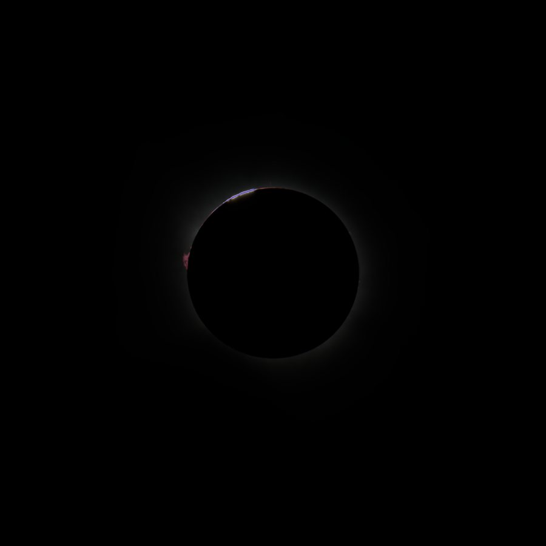

Guía
Cómo procesar las fotos de un eclipse total: HDR de la corona paso a paso
De la serie de exposiciones a una corona con todos sus filamentos: el flujo general (alinear, apilar, HDR, realce radial) y cómo lo hace Easy Corona.
1
Por qué una foto sola no basta
Durante la totalidad, la luz de la corona cae miles de veces entre el borde de la Luna y las serpentinas lejanas. Una cámara no cubre ese rango en una exposición: con una foto corta se ven las protuberancias y la corona interior, y con una larga las serpentinas exteriores, pero con el centro quemado. La solución es combinar toda la serie en una sola imagen de alto rango dinámico: un HDR.
El HDR solo es el principio. Es una imagen lineal, que se ve casi negra, y la corona está ahí, escondida: hay que estirarla y realzar sus filamentos sin sacar ruido ni halos.

2
El flujo, paso a paso
- Revelar los RAW sin retoques, con los mismos ajustes en todas las fotos. Si has hecho darks, bias y flats, se aplican en este paso.
- Alinear las fotos de cada exposición. Con una montura sin seguimiento, el Sol y la Luna se desplazan, y no a la vez. Se alinea por la Luna o por la propia corona, con precisión de una fracción de píxel.
- Promediar por exposición. Las fotos de una misma exposición se promedian: el ruido baja con la raíz del número de fotos. Hay que cuidar la Luna, que se mueve entre fotos: si se promedia sin más, su borde sale con fantasmas.
- Alinear las exposiciones entre sí, de la más corta a la más larga.
- Apilar el HDR. Cada píxel sale de las exposiciones donde no está quemado ni hundido en el ruido, con peso mayor a las que tienen menos ruido en esa zona. Es la parte que decide cuánto grano tendrá la corona lejana.
- Estirar la luz. Una curva de tono sube lo oscuro hasta que la corona se ve, y se resta el degradado del cielo, que a varios radios del Sol es más brillante que la propia corona.
- Realzar la corona de forma radial. La corona se organiza alrededor del Sol, y el ruido no. Los filtros que de verdad funcionan aprovechan esa simetría: desenfoques tangenciales, normalización radial (NRGF), MGN y otros. Mira «Por dentro» para ver qué hace cada uno.
- Color. Con color neutro o con el color real de la cámara, y el cielo de la totalidad.
- La Luna, la cromosfera y las estrellas. Se tratan aparte, porque necesitan exposiciones distintas.
- Guardar en TIFF de 16 bits para seguir retocando.
3
Cómo lo hace Easy Corona
Easy Corona hace todos esos pasos solo. En Crear HDR automático eliges tus fotos del eclipse (de una o varias carpetas), una carpeta de destino y pulsas Crear el HDR. La app lee la exposición de cada foto, las agrupa, alinea, promedia, apila y deja el HDR. Con la casilla Al terminar, realzar la corona hasta el resultado final sigue hasta la imagen terminada.
Después, en el modo sencillo, eliges el color (corona neutra o color original) y el realce (alto, medio o bajo), y cada deslizador se ve al momento en la vista previa. La versión gratuita lo hace todo, a 1200 px y con marca de agua, para que pruebes con tus fotos.

4
Lo que suele salir mal
- Grano en el cielo. Es lo que pasa cuando se estira de más una imagen con ruido. Más fotos por exposición y un buen apilado bajan el ruido antes de realzar.
- Halos o anillos oscuros alrededor de la Luna. Vienen de los filtros de nitidez aplicados sobre el borde. Hay que protegerlo.
- Una Luna borrosa o doble. El apilado la trata por separado.
- Colores irreales. Un cielo gris o un tinte muy fuerte. Mira el resultado a tamaño real, no en miniatura.